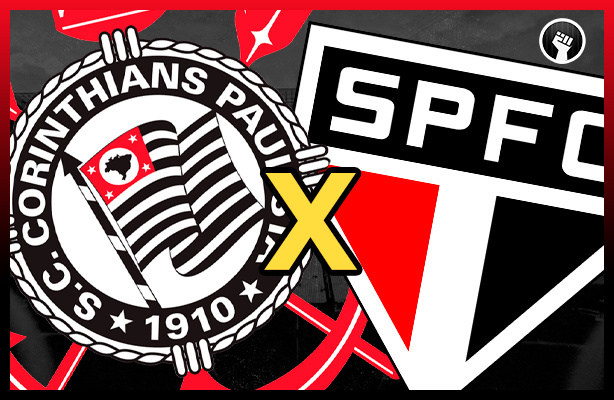

Grande clássico na tarde de ontem.
Corinthians e São Paulo terminaram empatados em 1x1 na partida disputada ontem pela sexta rodada do Campeonato Brasileiro 2023, o jogo foi marcado por atuação polêmica do árbitro. O time de Itaquera saiu na frente com um gol de penalti aos 45 do primeiro tempo, o tricolor do Morumbi empatou no segundo tempo com gol de Caleri.
Ler mais